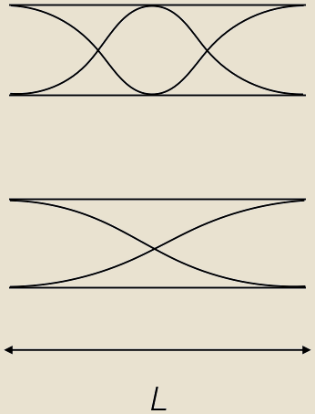
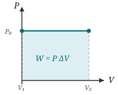
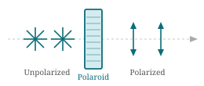
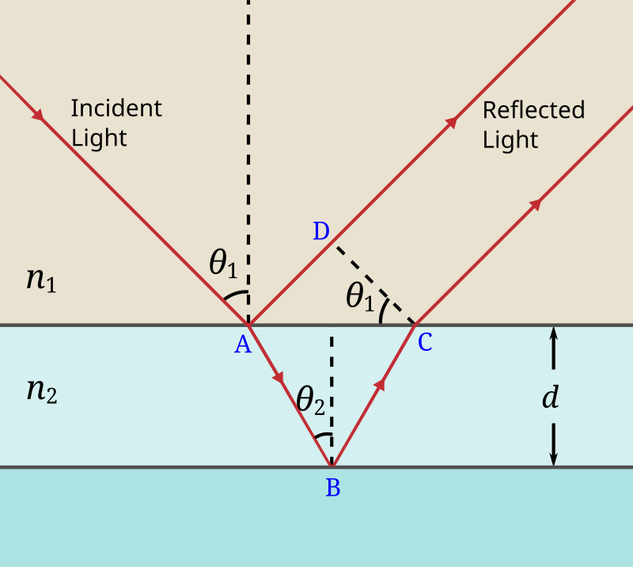
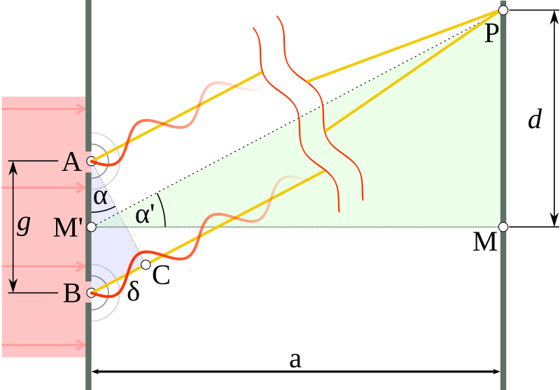

Teaching Roles
Developed and delivered three introductory physics modules under PHYS 2984 — Waves & Sound, Thermal Physics, and Optics — to approximately 90 undergraduate students. Courses were designed for students whose prior introductory physics had not covered these topics. Designed and administered all assessments independently.
Assessment: weekly problem sets, in-class quizzes, a midterm, and a final examination per module.
Topics: one-dimensional, transverse, and sinusoidal waves; sound waves, the Doppler effect, power and intensity; superposition, standing waves on a string and in pipes, and interference in two and three dimensions.
Topics: solids, liquids, and gases; temperature, moles, and the ideal gas law; work, heat, and the first law of thermodynamics; molecular speeds and pressure; heat engines, refrigerators, and the second law of thermodynamics.
Topics: the ray model for light, reflection and refraction, image formation by mirrors and lenses, optical instruments, the wave model of light, interference and diffraction of light waves.
Taught introductory physics across four semesters, covering two mandatory sequences taken by all Virginia Tech undergraduates. PHYS 2305/2306 (Foundations of Physics, calculus-based) was for students in physical sciences, mathematics, and engineering; PHYS 2205/2206 (General Physics, no calculus prerequisite) was for students in all other disciplines. Laboratory sessions ran three times a week. Available for consultation four times weekly, open to all enrolled students from both tracks.
Assessment: theory — weekly assignments, two in-class midterms, and a final examination; labs — written lab reports (graded).
Lab · PHYS 2215 — General Physics Laboratory. Topics: force, momentum, conservation of energy, wave and interference phenomena.
Lab · PHYS 2305 — Foundations of Physics. Topics: classical mechanics, gravitation, and thermal physics; experiments were calculus-based, in line with the theory course.
Lab · PHYS 2306 — Foundations of Physics. Topics: oscillations, waves, electricity, magnetism, optics; experiments covered resonance, electromagnetic induction, circuit analysis, and geometric optics.
Recitations · PHYS 2305 — Foundations of Physics. Planned and led independently, 2–3 times weekly; sessions covered classical mechanics, gravitation, and thermal physics, alongside assignment questions and revision ahead of each midterm and the final.
Lab · PHYS 2306 — Foundations of Physics. Same topics and experiments as Fall 2014.
Pedagogy Training
Coursework covered how to design lessons and how students learn, drawing on references including Randall Knight’s Five Easy Lessons: Strategies for Successful Physics Teaching and PhET, a free open-source simulation library from the University of Colorado Boulder. The central design principle across all assignments: guide students to construct results themselves — grounding mathematics in physical observation rather than presenting formulae as given. Two co-authored lesson plans and an independent unit were produced, each incorporating PhET simulations to let students explore behaviour hands-on before the theory is introduced. Materials and lesson plans are available online (GitHub).
After completing this course, I went on to teach an undergraduate physics course structured around the three modules described above. It changed how I planned and taught each of them.

Opens with a hands-on tuning fork experiment: students find the resonant lengths for open and closed pipes before any theory is introduced. A guided worksheet then leads them through diagrams to identify nodes and antinodes at each boundary, deriving the standing wave conditions: \[L = \tfrac{n\lambda}{2} \quad \text{(open pipe)}, \qquad L = \tfrac{(2n-1)\lambda}{4} \quad \text{(closed pipe).}\] Comparing both cases makes the effect of boundary conditions tangible.Explore: PhET Sound simulation.
Assessment: A prediction task: students estimate the resonant length for the next harmonic mode before verifying it against the derived formula. A short follow-up quiz asks students to apply the standing wave conditions to a new tube length for both open and closed configurations.

The physical model is a gas-filled cylinder with a moveable piston: students are asked how much work the gas does as it expands by \(dx\). Starting from \(W = -\int \mathbf{F} \cdot d\mathbf{x}\) and \(P = F/A\), they derive \(F = PA\) and, noting that \(A\,dx = dV\), arrive at: \[W = P\,\Delta V,\] shown geometrically as the shaded area under a pressure–volume graph. The plan extends to \(dW = P\,dV + V\,dP\), from which constant-pressure and constant-volume processes follow naturally.Explore: PhET Gas Properties simulation.
Assessment: A PV diagram task: students sketch a constant-volume process and explain why no work is done. A short quiz then asks them to calculate the work done by a gas expanding at constant pressure between two given volumes.
Covers the fundamental wave processes of light: polarisation, thin-film interference, and single/double slit diffraction. The lesson plan structures each topic around prediction before observation: students are asked to state what they expect before each demonstration runs, then build the theory from what they see.



Assessment: A two-question prediction check at the end of each sub-topic, answered in writing before the class discussion; a take-home problem set in which students calculate fringe positions and film thicknesses for given wavelengths and slit dimensions; and a 30-minute end-of-unit test covering polarisation angles, thin-film path differences, and diffraction patterns.
PHYS 2984 · Virginia Tech, USA · Aug–Dec 2018